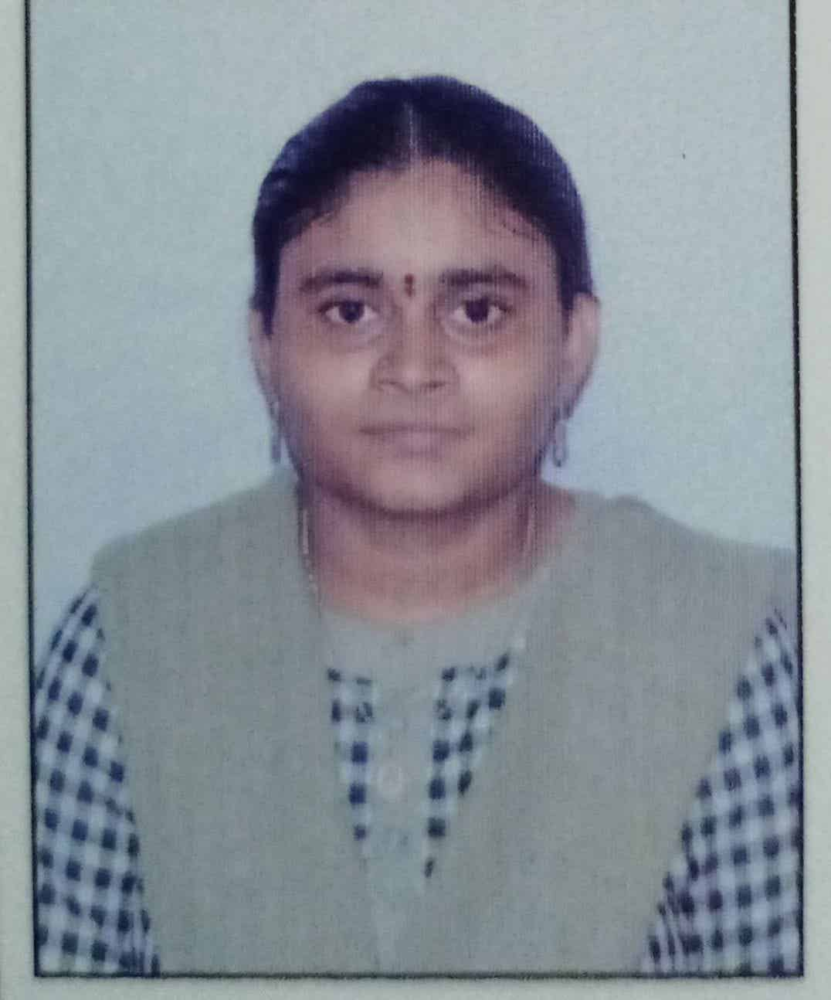

Busam Naga Sharmi

career objective:
Looking to seek a profession where my knowledge
and capabilities are utilised to the best for
the growth of the organisation and my career.
Higher Educational Qualification:
- B.Tech in Electronics and communication Engineering
from Sri vasavi institute of Engineering and
technology college,Nandamuru with 73.81% till now.
- Completed Diploma in Electronics and communication Engineering
from Sri vasavi institute of Engineering and
technology college,Nandamuru with 91.07% in 2023
- SSC from Sri venkateswara public school (CBSE),Machilipatnam
with 59% in 2020.
Internships:
-
Completed Industrial Training in QAD in
Embedded IT solutions,Hyderabad,Telegana. july 2022-January 2023.
- Completed 2 months virtual Internship
in Embedded Systems in BIST technologies Private
limited,Vijayawada,Andhra pradesh.
Skills:
-
Validating raw material whether
compliant with customer requirement or not.
-
Electronic Components – Passive
& Active against BOM and Manufacturer Datasheet.
-
Electrical parts like Switches, Wire Harness.
- Mechanical parts like Trays, RF Shield,
Connectors.
- Electromechanical Part – PCB.
- Carried out First Article Inspection.
- Documenting the results of inspection.
- Documenting Inspection Results in TCS Ion ERP Tool.
- Validation of Feeder Setup Report against BOM.
- Handled NPI – Sticky Board Validation and Correction in First Board.
- Ensuring timely Calibration of Equipment by External Calibration
Agencies, updating data & uploading Certificates in DMS.
- Controlled all documents under Documentation Management System.
- Basics of Python programming language.
- Basics of Verilog VHDL and VHDL languages.
- Basic knowledge of c language.
Projects:
Smart plant watering system.
Memberships:
Member in,Institution of Electronics and
Telecommunication Engineering(IETE),India
Membership No:319071.
Valid from November 2024 to November 2026.
Others